Project 4: Neural Radiance Fields
Building 3D scene representations from 2D images using neural networks and volume rendering
Overview
This project explores Neural Radiance Fields (NeRF), a powerful technique for synthesizing novel views of complex 3D scenes from a set of 2D images. I implemented the complete pipeline: from camera calibration and pose estimation, to training neural networks that represent scenes as continuous 5D functions (spatial location and viewing direction to color and density). The project progresses from fitting a neural field to a single 2D image, to reconstructing full 3D scenes with photorealistic rendering from arbitrary viewpoints.
Part 0: Camera Calibration and 3D Object Scanning
Part 0.1: Calibrating Your Camera
I captured 39 images of ArUco calibration tags from various angles and distances using my phone camera. The calibration process extracts the camera's intrinsic parameters (focal length, principal point) and distortion coefficients using OpenCV's calibration functions.
Samples of Captured Images
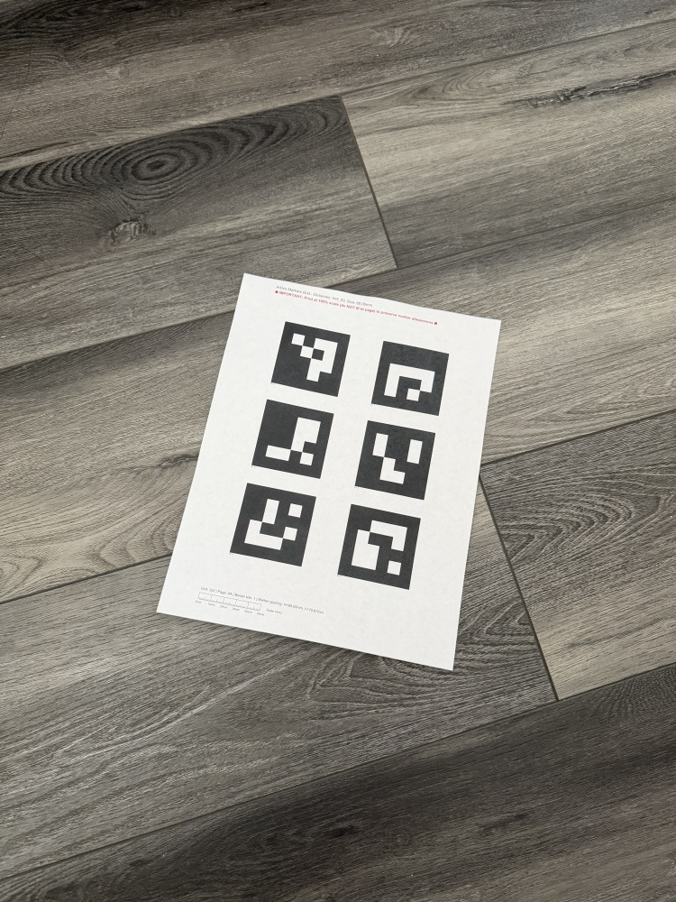
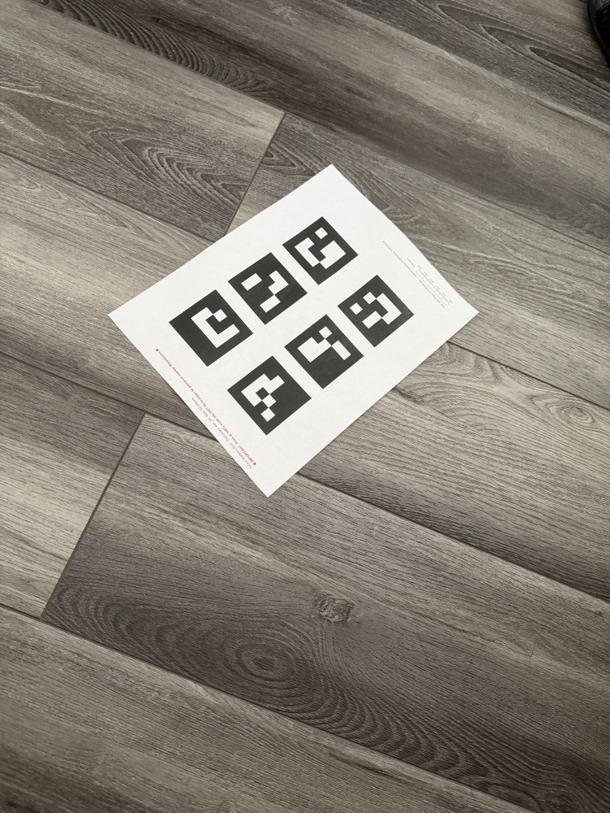
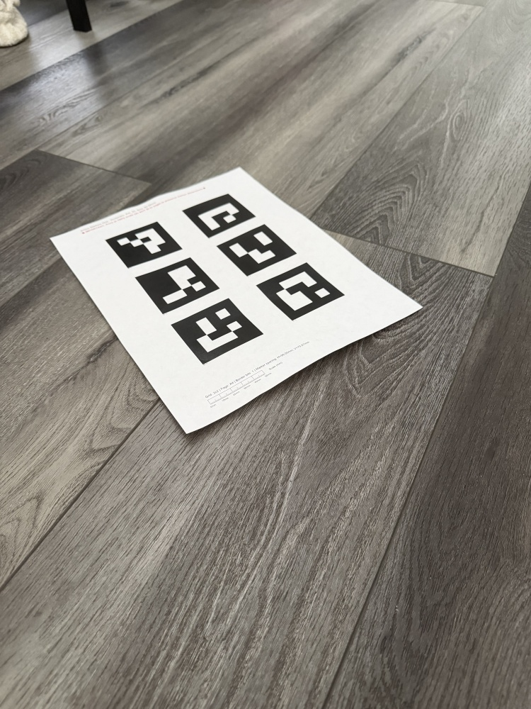
Part 0.2: Capturing a 3D Object Scan
I selected my rubiks cube and placed it next to a single ArUco tag (#18) on a flat surface. Using the same camera and zoom settings as calibration, I captured 79 images from different angles in a rotating motion, keeping the same distance away from the object.
Sample Captured Images
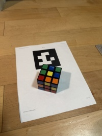
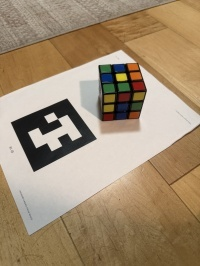
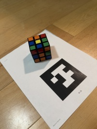
Part 0.3: Estimating Camera Pose
Using the calibrated camera parameters, I estimated the 6-DOF camera pose (rotation and translation) for each captured image using the Perspective-n-Point (PnP) algorithm. The ArUco tag serves as the world coordinate frame origin.
PnP Pipeline
Input: 3D tag corners in world space + 2D detected corners in image
Solve: cv2.solvePnP() finds rotation (rvec) and translation (tvec)
Convert: Rodrigues formula converts rvec to 3×3 rotation matrix R
Invert: Compute camera-to-world from world-to-camera transform
Camera Frustum Visualization
Using Viser, I then visualized the estimated camera poses as 3D frustums showing position, orientation, and image for each set.
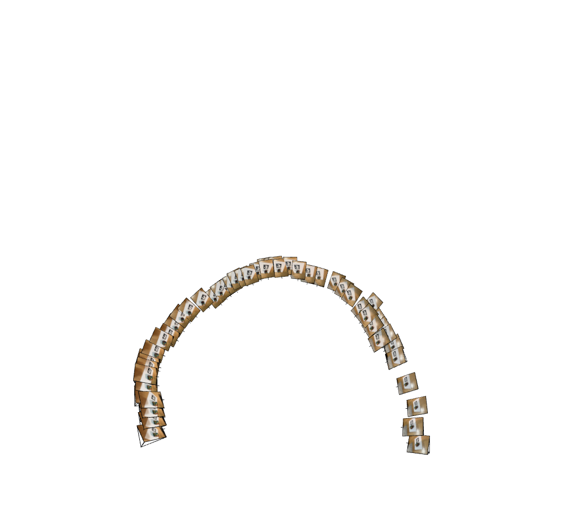
Cube Perspective 1
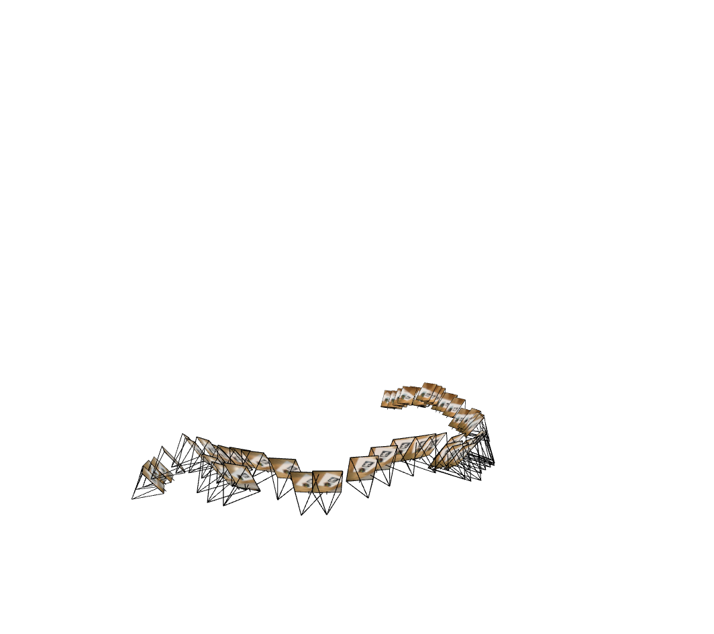
Cube Perspective 2
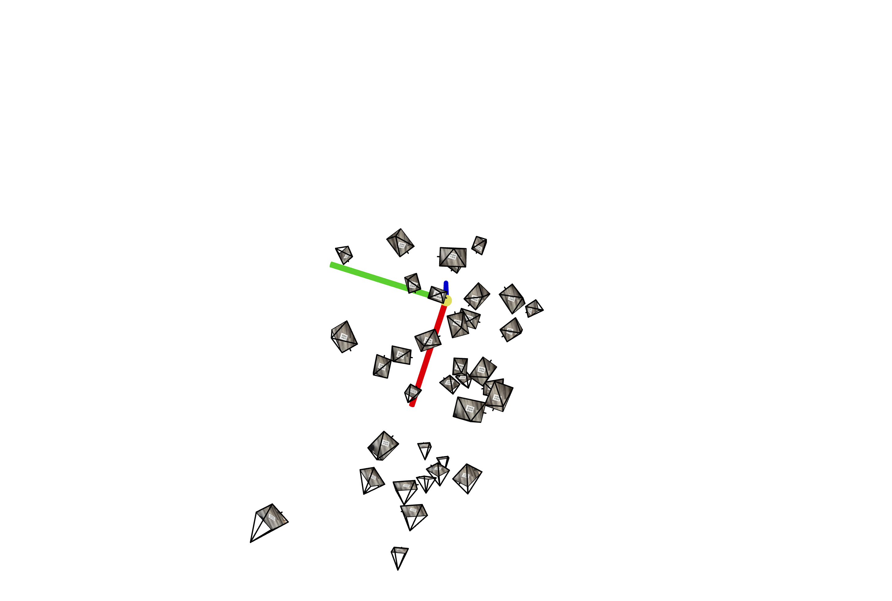
Calibration Perspective 1
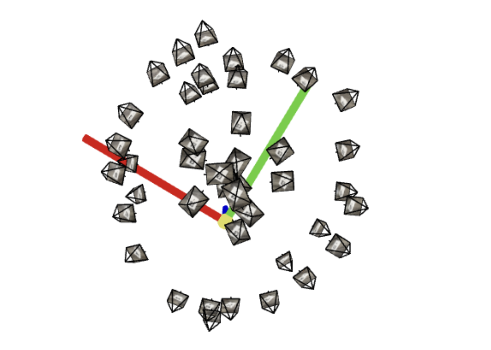
Calibration Perspective 2
Part 0.4: Undistorting Images and Creating Dataset
My final preprocessing step involves undistorting all captured images using the calibration results and packaging everything into a .npz dataset file compatible with the NeRF training code later on.
Dataset Creation Pipeline
1. Undistort: Remove lens distortion using cv2.undistort()
3. Update intrinsics: Adjust principal point (cx, cy) after cropping
4. Split data: Divide into train (80%), validation (15%), test (5%) sets
5. Save .npz: Package images, c2ws, and intrinsics for NeRF training
Part 1: Fit a Neural Field to a 2D Image
Neural Field for 2D Image Representation
Before tackling 3D NeRF, I implemented a simpler 2D neural field that learns to represent an image as a continuous function f(x, y) → (r, g, b). This involves an MLP with sinusoidal positional encoding to match normalized pixels to RGB colors.
Network Architecture
Input: 2D coordinates (x, y) normalized to [0, 1]
Positional Encoding: Expand to 4L + 2 dimensions using sin/cos at L frequency levels
MLP: 3-4 hidden layers with ReLU activations
Output: RGB values through Sigmoid (range [0, 1])
Loss: MSE between predicted and ground truth pixel colors
Optimizer: Adam with learning rate 1e-2
Model Configuration
- Layers: 4 layers (x -> 256 -> 256 -> 256 -> rgb)
- Width: 256 hidden units
- Positional Encoding: L=10 (42-dim encoding)
- Activation: ReLU for hidden layers, Sigmoid for output
- Learning Rate: 1e-2
- Batch Size: 10,000 pixels per iteration (batch size)
- Iterations: 3,000
Original Image

Training Progression - Test Image
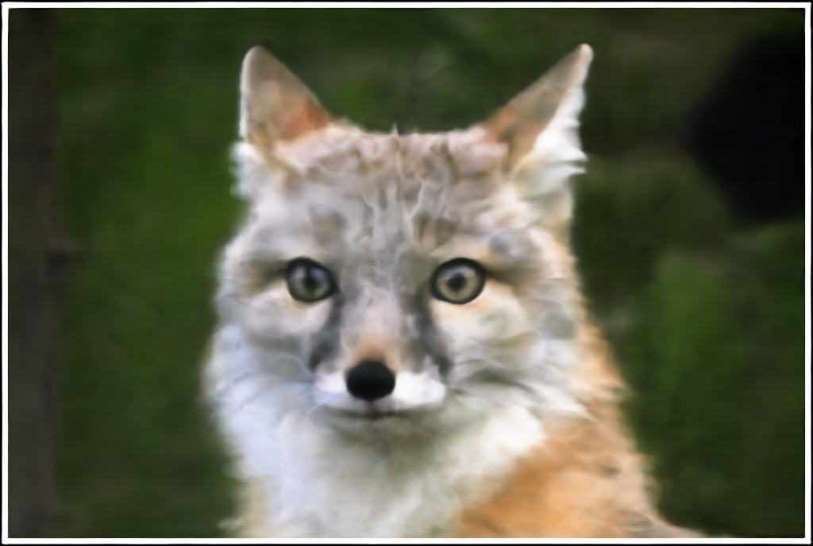
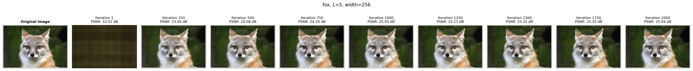
I experimented with different values for L and width, and can see here that lower L values make the image overly smooth and blurry, while higher width values help sharpen the image. The above image progression has L=5 while the second uses L=20.
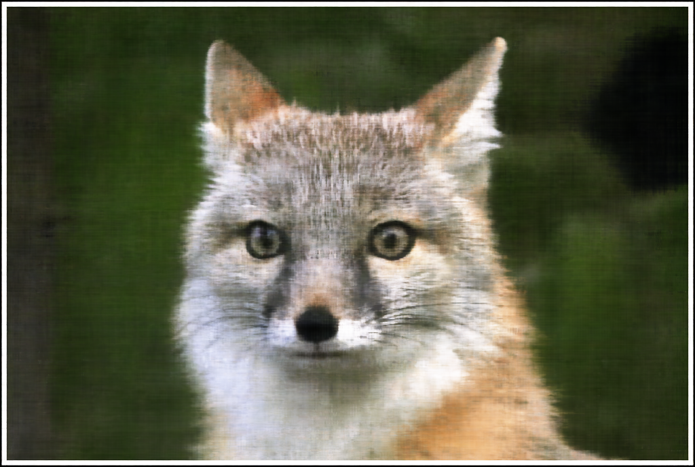
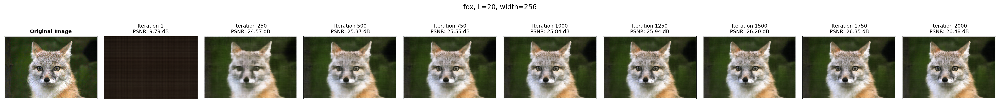
Original Image
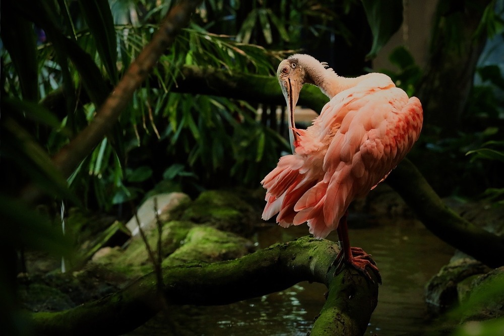
Training Progression - My Own Image
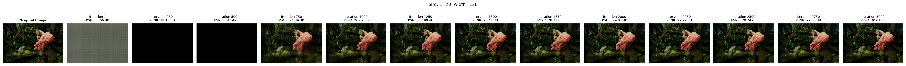
Similar progression on a custom image I took. The first uses width=128 while the second uses width=64 (both with L=20). I also include the psnr training curve.
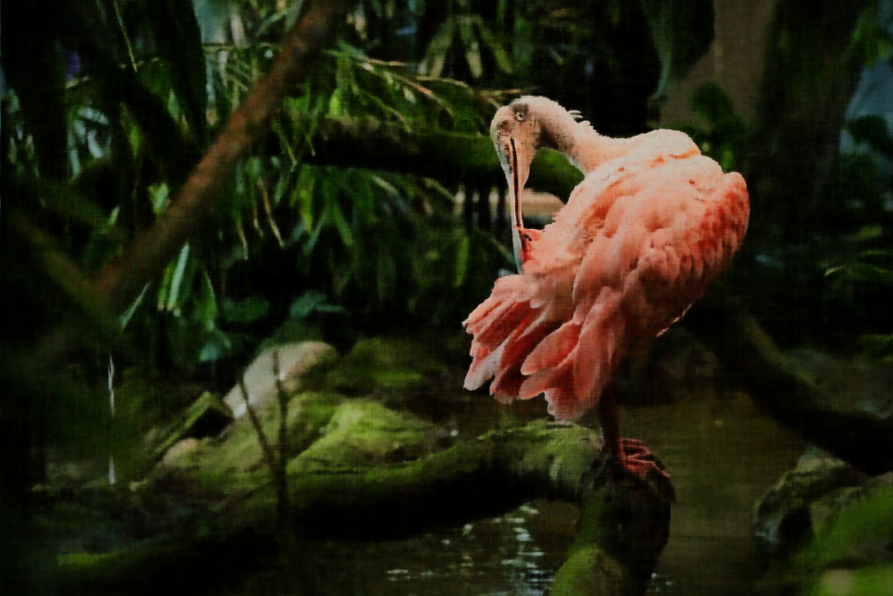
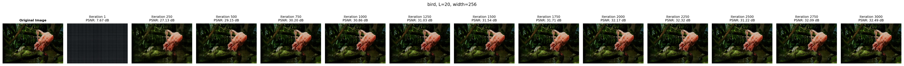
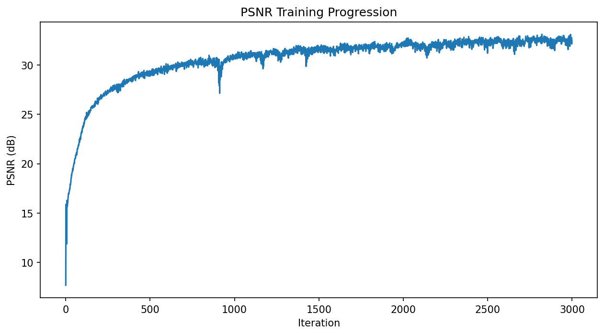
Part 2: Fit a Neural Radiance Field from Multi-view Images
Part 2.1: Create Rays from Cameras
To render images from a NeRF, we need to cast rays through each pixel as showin in viser, which involves three coordinate transformations: pixel -> camera -> world coordinates.
Coordinate Transformations
I implemented three key functions for ray generation:
transform(): Converts points from camera to world (c2w) coordinates using matrix multiplication with the c2w transformation. I made coordinates homogeneous by appending 1s, then multiplied by c2w and extracted the 3D result.
x_world = c2w @ x_camera
pixel_to_camera(): Uses the inverse intrinsics matrix K^-1 to unproject 2D pixel coordinates to 3D camera space. I then stacked pixel coordinates with 1s, multiplied by K^-1, then scaled with depth.
x_camera = K^(-1) @ [u, v, 1]^T × depth
pixel_to_ray(): Combines the above two functions to generate rays. For each pixel, I computed its 3D position at depth=1 in camera space, transformed to world space, then calculated the ray origin (camera center from c2w) and normalized direction vector.
Part 2.2 & 2.3: Sampling Points Along Rays
To evaluate the NeRF along each ray, I represent rays into N sample points between near and far planes. During training, I also added random perturbations to avoid overfitting to fixed sample locations. Below, I explain how I implement each function:
sample_rays_from_images()
I first created meshgrid of all pixel coordinates (i, j) for all training images. Then, for each training iteration I selected N pixels from across all images using np.random.choice(). I added 0.5 to pixel coordinates to get the pixel centers. Then, I used my pixel_to_ray() function to compute the origin and direction of the ray.
sample_along_rays()
I create N evenly spaced values between near and far parameters using torch.linspace(). I compute the midpoints and randomly perturb each sample. Then, I compute the 3D locations using pts = ray_o + ray_d × t, broadcasting across all rays and samples.
Visualization of Rays and Samples
Below shows up to 100 randomly sampled rays from the first camera, along with sample points along each ray. The rays originate from the camera center and pass through the scene.
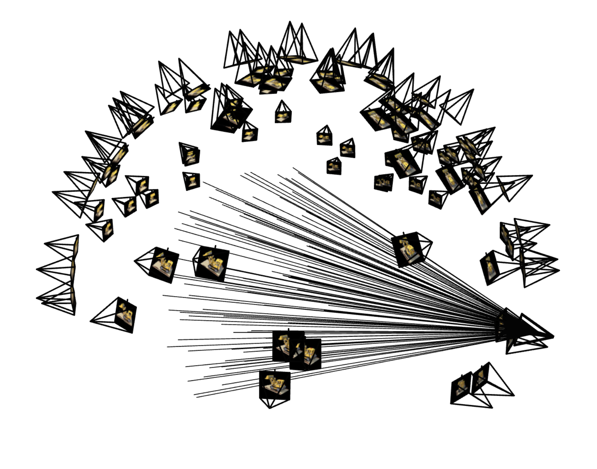
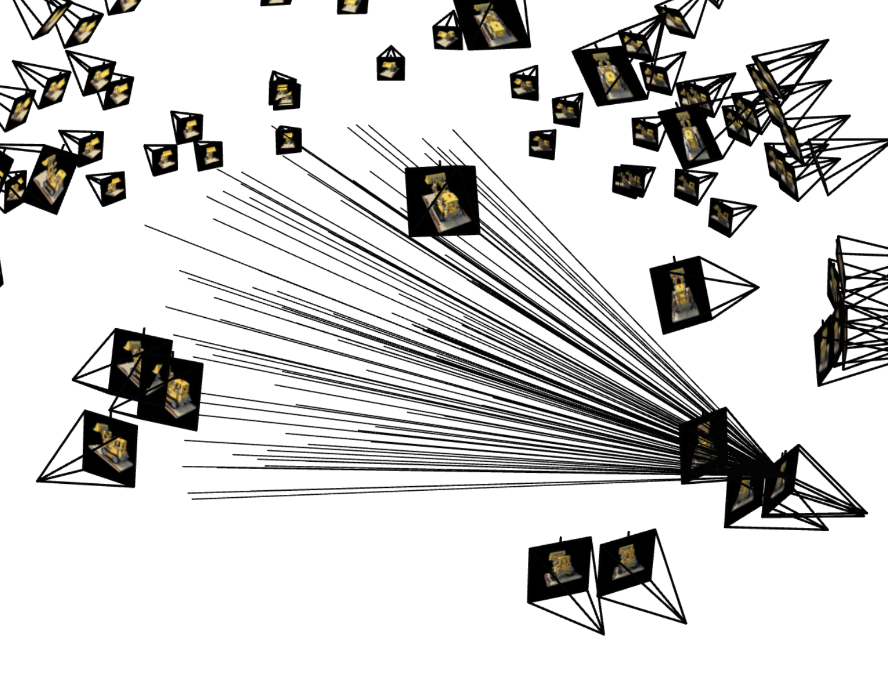
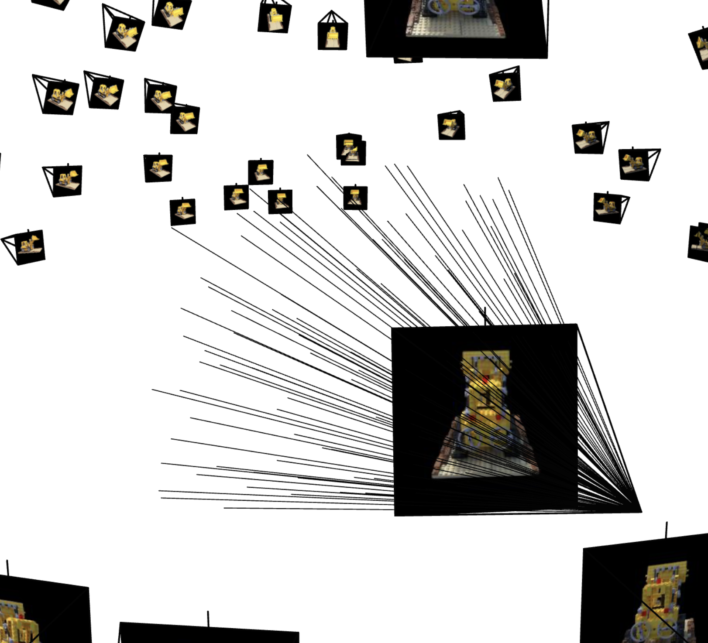
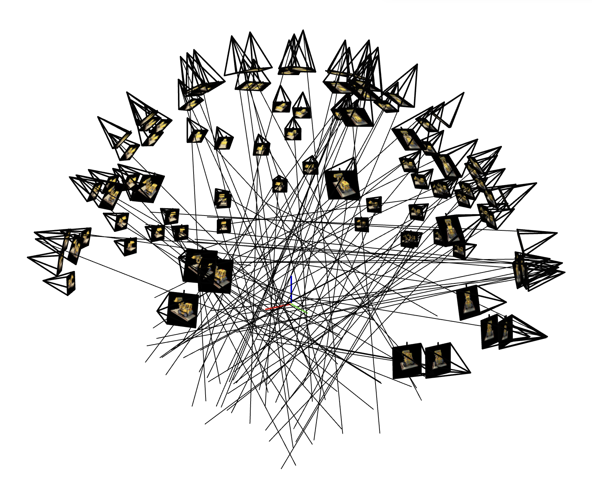
Part 2.4: Neural Radiance Field Network
My NeRF network takes 3D positions x and viewing directions r_d as input, and outputs RGB color and volume density.
Network Architecture
Input:
• 3D position (x, y, z) with positional encoding (L=10)
• View direction with positional encoding (L=4)
Architecture:
• 8 fully connected layers (256 units each)
• Skip connection at layer 5
• Density head: 1 neuron with ReLU
• Color head: 2 layers, that output 3 RGB values with Sigmoid
Output:
• RGB representing color at position given by the viewing direction
• density

Part 2.5: Volume Rendering
The volume rendering proedure combines the color and density values along each ray to produce the final pixel color.
Implementation Overview
I implemented the discrete volume rendering equation using PyTorch operations:
volrend(): First, I computed alpha values (opacity) using the formula: alpha = 1 - exp(-sigma × delta). Then I calculated transmittance using torch.cumsum() to sum all density values. Finally, I computed weights by multiplying transmittance and alpha, then found the final color using torch.sum(weights × rgbs).
render_rays(): This function samples points along rays using sample_along_rays(), queries the NeRF network for RGB and density at each point, then calls volrend() to composite the final pixel color.
Training Progression
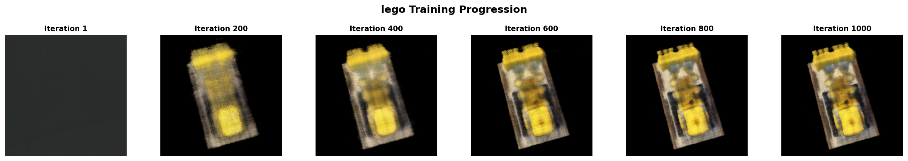
PSNR Curves
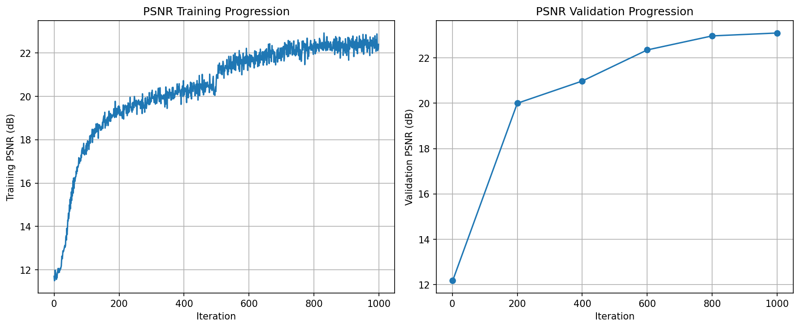
Over 1,000 iterations, we achieve a final validation PSNR of 23.5 dB.
Novel Views
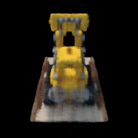
Rendering from provided test camera poses
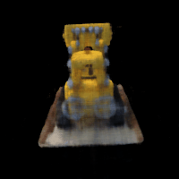
Spherical orbit around the scene (60 frames)
Part 2.6: Training NeRF on My Own Data
Using the dataset cube created in Part 0, I trained a NeRF on my own captured object. This required adjusting hyperparameters like near/far planes and sample count to match the different scene scale.
Visualization of Rays and Samples
Hyperparameter Adjustments
- Near/Far planes: Changed from (2.0, 6.0) to (0.02, 0.6)
- Samples per ray: Increased from 32 to 64 for better quality
- Image resolution: Resized images to reasonable size (~200-300px) and recomputed calibration matrices for faster training
- Training iterations: Trained for 1500 iterations to reach convergence
- Learning rate: Kept at 5e-4
Training Progression
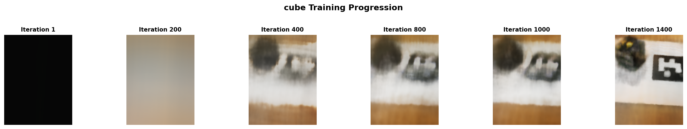
Training Loss Curve
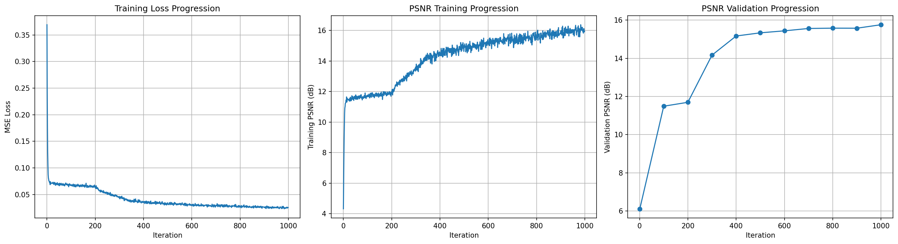
Training and validation PSNR curves show steady improvement. The model converges to a stable representation of the scene after ~1500 iterations with PSNR = 16.
Novel View Rendering
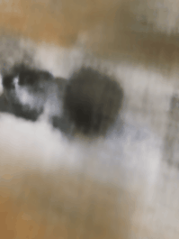
Challenges
The biggest challenge I faced was being limited by my compute. Ideally, I would be able to reach full convergence and run for 2000-3000 iterations, but my laptop was not strong enough and colab blocked my student verification to get online GPUs. Each training loop took ~30 minutes, and I was not able to tune my hyperparameters to my best degree compared to if I had more compute power. Still, I think the gif clearly shows the rubiks cube and the tag on the surface.